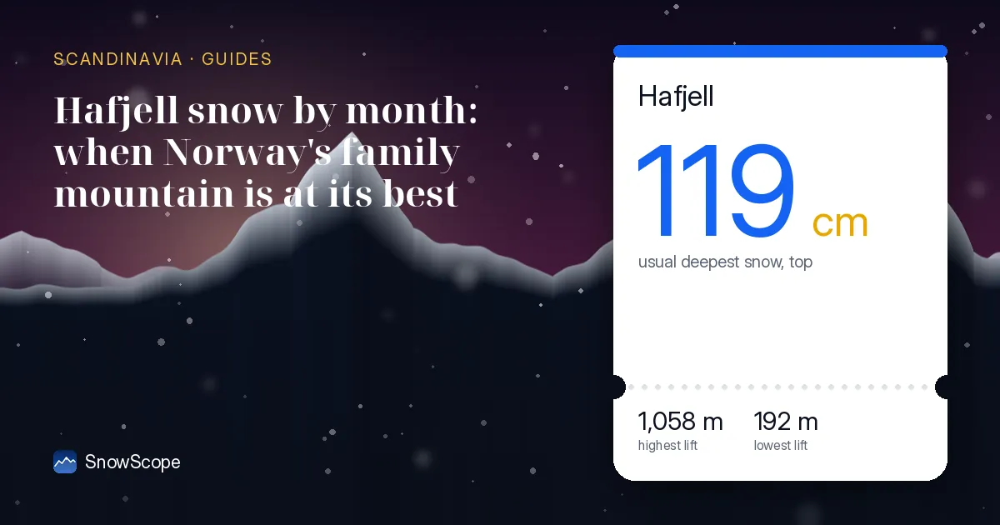

Hafjell snow by month: when Norway's family mountain is at its best
Hafjell is the big, gentle mountain above Lillehammer: 39 km of mapped runs served by 17 lifts, from the valley at 192 m to the top at 1058 m. It is not high by Alpine standards, so the question families ask is simple: when is there enough snow, and when is it at its best? Our snow history of 46 past winters answers it height by height.
See the live snow forecast for Hafjell in the SnowScope appSnow depth, powder alerts and the 3D map, free.

The first snow comes in October, the skiing in December
At mid-mountain (625 m) the first snow of the winter has arrived by October 19 in half of the past winters, and by October 30 even at the base. That first snow rarely lasts. The usual depth in November is only 20 cm at mid-mountain, with a wide spread from 3 to 47 cm between a poor and a rich November.
December is when the mountain turns white for good: 50 cm at mid-mountain and 60 cm at the top in a typical year. Hafjell makes a lot of snow on its lower runs, and the cold Gudbrandsdalen air keeps it, which is why the resort can open its main runs before the natural cover alone would allow.
January to March: the deep months
The depth keeps climbing through the winter. January brings 78 cm at mid-mountain, February 88 cm and March 91 cm, which is the deepest month of a usual winter at every height. At the top the March figure is 101 cm.
The best single week at mid-mountain is ISO week 11, in the first half of March, when 100 per cent of the past winters had at least 50 cm there and the usual depth was 92 cm. For a trip you book months ahead, late February and March are the safest dates.
How reliable is it? Weeks with real snow
We count the weeks in which mid-mountain had at least 50 cm of snow. Hafjell reaches that in 12 weeks in nine of ten winters, and in 20 weeks in half of them. The top does better: 15 weeks in nine of ten winters.
The winter peak at mid-mountain is 106 cm in a typical year, between 73 cm in the poorest past winter and 159 cm in the richest. Last winter peaked at 85 cm there, below the usual.
April: spring skiing on the upper mountain
Snow lasts long on this mountain. At the top the usual depth in April is still 99 cm, and the last snow of the winter at mid-mountain is gone by May 22 in half of the past winters. The base melts out earlier, so spring trips are a top-half affair.
Are the winters getting shorter?
Comparing the first 15 of our 46 winters with the last 15, the peak at the top went from 122 cm to 118 cm, a small change. The number of days with snow on the ground at mid-mountain fell from 213 to 194: the depth holds, the season is a little shorter at both ends.
Tips for skiers
- Book February or March for the deepest and most reliable snow at every height.
- December works thanks to snowmaking and cold air; expect natural cover mainly on the upper half.
- Snow on our map does not mean a lift is open: check the resort's own lift status before you travel.
- For a car-free trip, the mountain is a short bus ride from Lillehammer station.
References and credits
- Wikipedia, 'Hafjell', retrieved 22 November 2026: location above Lillehammer, Gudbrandsdalen. en.wikipedia.org/wiki/Hafjell
About these numbers
Snow numbers: SnowScope snow history, 46 past winters (1980-81 to 2025-26) at three heights of the resort, a model of the past corrected for height (an estimate for an area, not resort reports). Lift, run and access facts: the sources listed below, checked on the date shown.
Official avalanche bulletins: Varsom (NVE)
Cite this report
For research, teaching or the press: the numbers and charts are free to reuse under CC BY 4.0 with this citation.
SnowScope (2026), Hafjell snow by month: when Norway's family mountain is at its best, https://snowscope.app/blog/en/2026/11/hafjell-snow-by-month-when-to-go.html, accessed 2026-11-22
SnowScope (Atlas Labs). (2026, November 22). Hafjell snow by month: when Norway's family mountain is at its best. SnowScope snow reports. https://snowscope.app/blog/en/2026/11/hafjell-snow-by-month-when-to-go.html
BibTeX
@misc{snowscope2026hafjellsnowbymonthwhento,
author = {{SnowScope (Atlas Labs)}},
title = {Hafjell snow by month: when Norway's family mountain is at its best},
year = {2026},
month = nov,
howpublished = {\url{https://snowscope.app/blog/en/2026/11/hafjell-snow-by-month-when-to-go.html}},
note = {Published 2026-11-22 11:12 UTC; accessed 2026-11-22}
}· CC BY 4.0 · Methods, data and tools →
Hafjell: snow and temperature by height, this winter vs last (tools) →
Follow Hafjell
Free: a message when fresh snow is coming, and the forecast every morning.
More snow reports
Italy has 101 cm at La Thuile ski on 22 November, three times the normal depth for this date. The Aosta Valley led with 242 cm in 72 hours.
December snow odds from 46 winters and checked day prices: Ski Cooper $49, Les 3 Vallées €75.70, Oukaïmeden no official tariff. Where a cheap December ski day works.

Himalaya snow cover in November 2026 from NASA MODIS: snow on 610,409 km² of ground above 2,000 m between the Hindu Kush and Bhutan, half the clear ground white from about 4,800 m in Nepal and 3,600 m in the Karakoram. The NDSI explained, plus shadows, cloud and the low autumn sun.